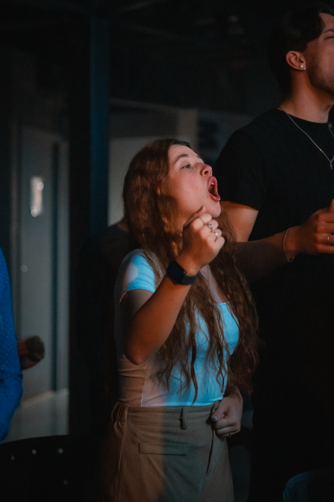
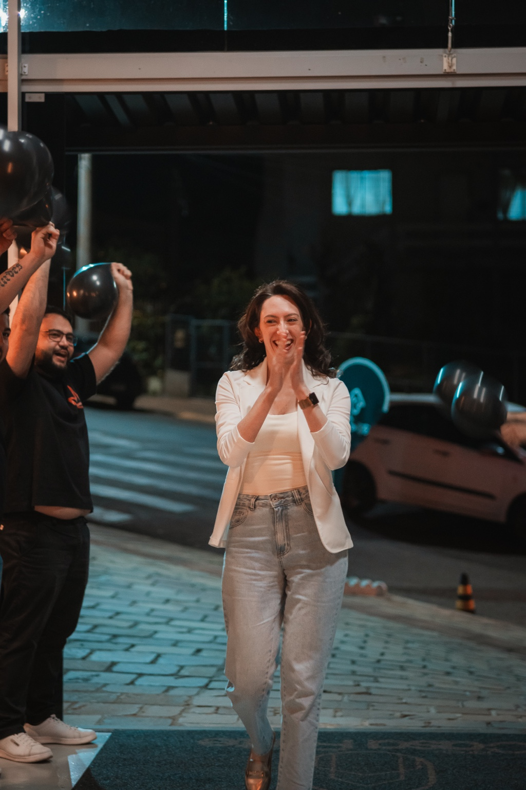
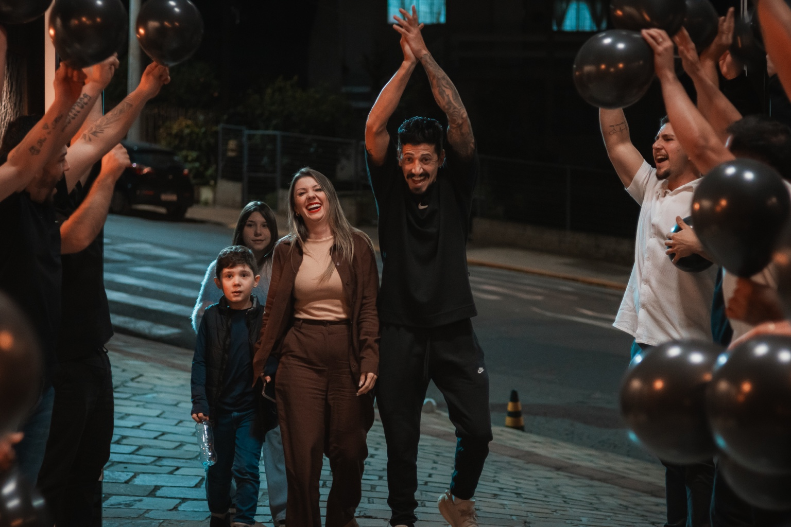
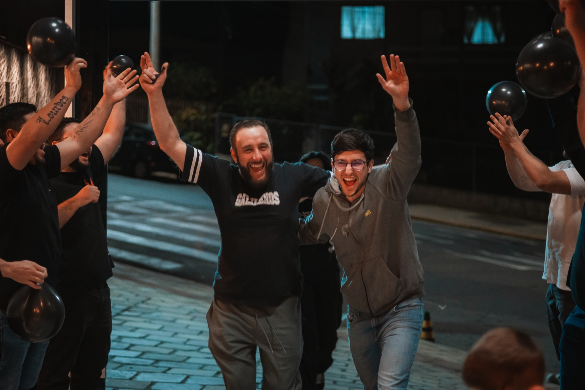
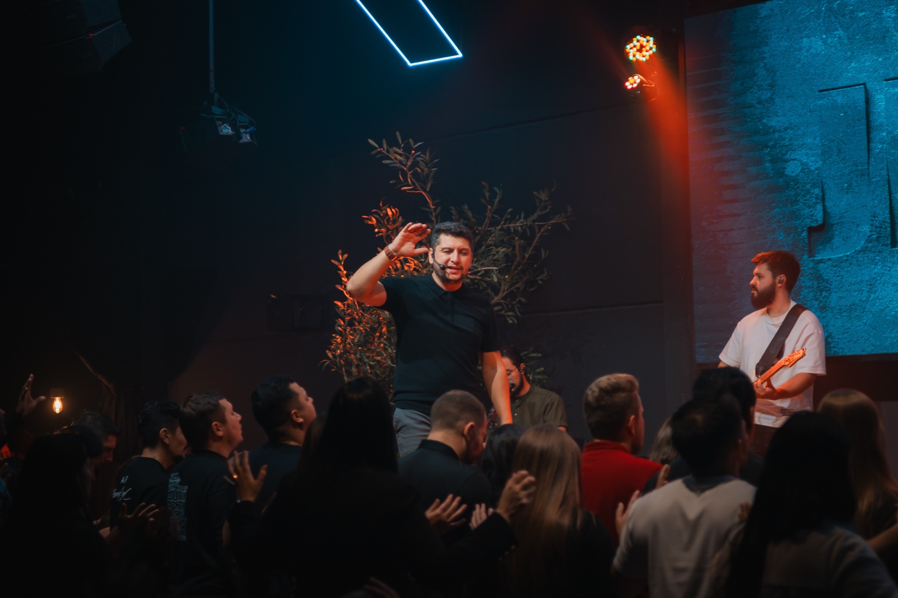
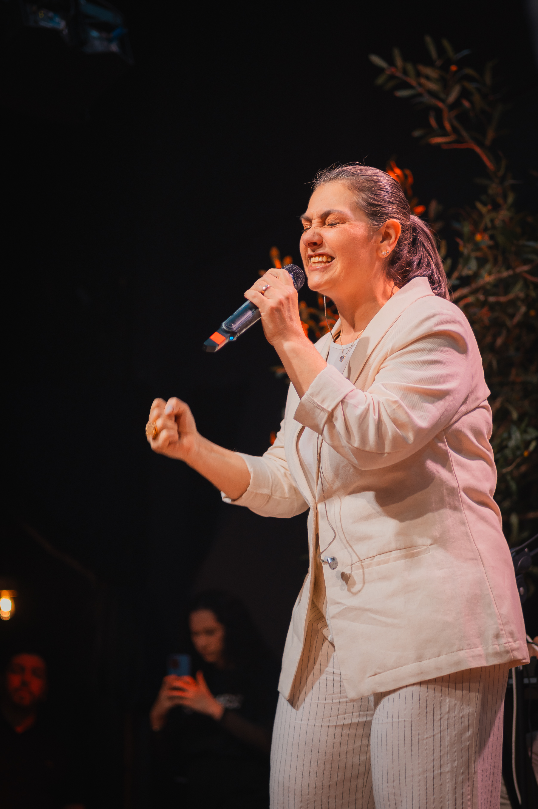

QUERO CONHECER A CASA
Conecte-se de verdade.
PROGRAMAÇÃO
Tem sempre um próximo passo.
Venha como você está. Nós queremos caminhar com você.
SOU DA CASA
Seu ponto de conexão durante a semana.
GENEROSIDADE
Juntos construímos o que Deus está fazendo.
O QUE DEUS TEM FEITO NA CASA
Uma comunidade viva.






PEDIDOS DE ORAÇÃO
Você não precisa carregar isso sozinho.
Seu pedido será encaminhado para nossa equipe de intercessão, que estará orando por você.
Pedido enviado com sucesso!
Nossa equipe recebeu sua mensagem e estará orando por você.